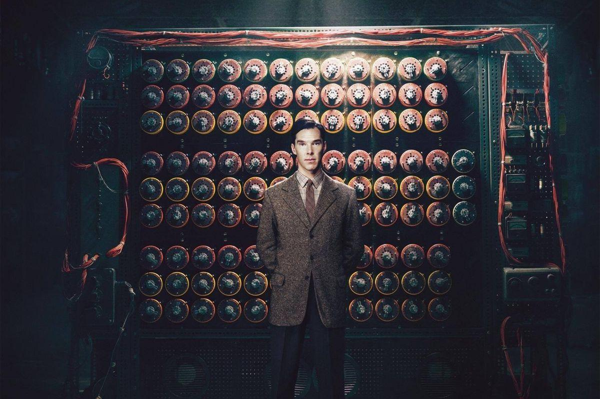
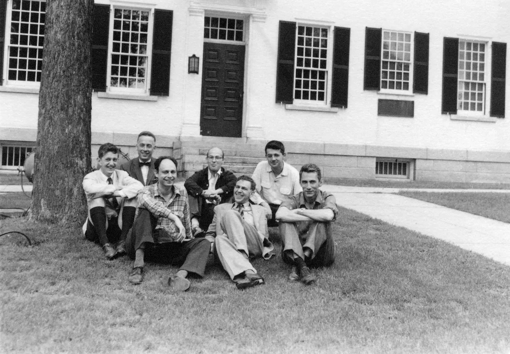
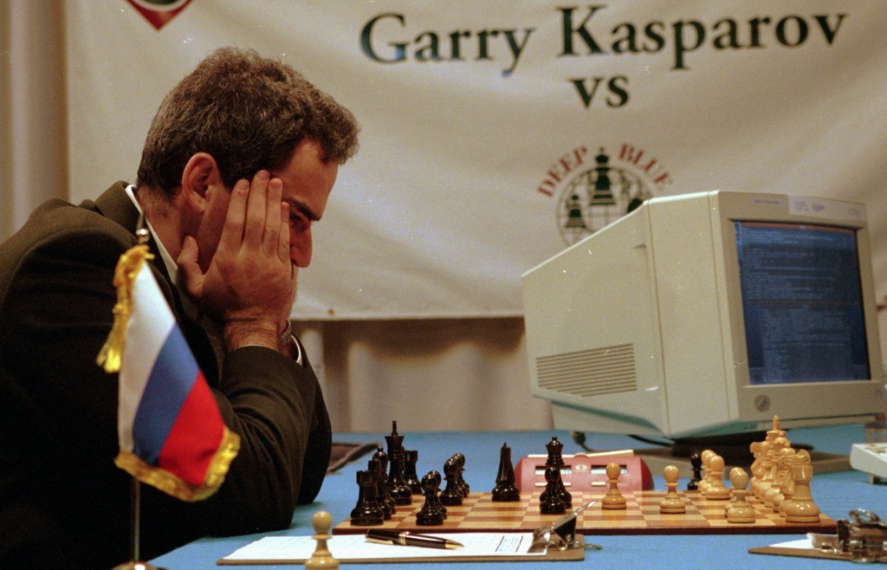
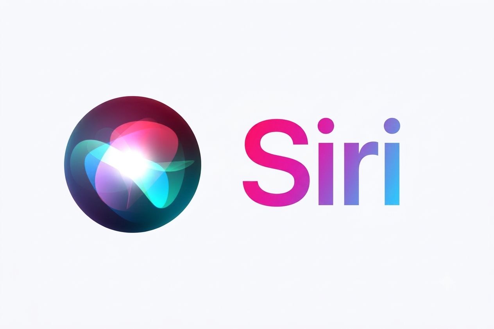
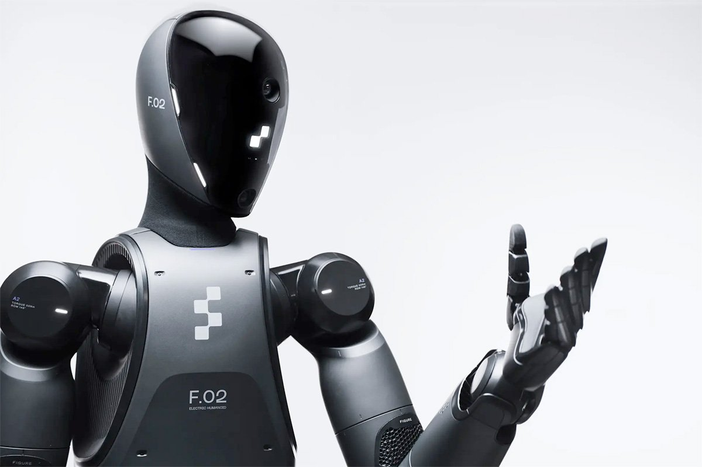

1950 - Alan Turing

Alan Turing was a British mathematician who believed that computers could think like humans. He introduced the Turing Test, which is used to check if a machine can behave intelligently. In this test, a human evaluator judges natural language conversations between a human and a machine. If the evaluator cannot reliably tell the machine apart from the human, the machine passes. This groundbreaking concept laid the foundational philosophy for modern artificial intelligence.
1956 - Birth of Artificial Intelligence

In 1956, the term "Artificial Intelligence" was introduced at the Dartmouth Conference. Many people consider this event as the beginning of AI as a field of study. Organized by John McCarthy, Marvin Minsky, and other pioneers. The conference brought together scientists to discuss how machines could simulate human intelligence. They explored topics like neural networks, natural language processing, and problem-solving theories.
1997 - Deep Blue Wins

IBM's Deep Blue computer defeated world chess champion Garry Kasparov. This showed that computers could solve difficult problems and compete with humans. The historic six-game match took place in 1997 and marked a massive milestone in computer science. Deep Blue achieved victory by analyzing up to 200 million chess positions per second to calculate its best moves. While Kasparov's loss shocked the world, it proved that strategic, problem-solving was no longer exclusive to humans.
2011 - Siri

Apple launched Siri, a voice assistant that could answer questions, set reminders and perform tasks using voice commands. Released in 2011 with the iPhone 4S, this integration brought artificial intelligence directly into the pockets of millions of everyday users. Siri utilized advanced natural language processing to understand context and intent rather than just rigid keyword commands.
2022 - Rise of AI Chatbots
AI became much more popular with tools like ChatGPT. People started using AI for studying, writing, coding and many everyday tasks. Powered by large language models, these generative AI tools could produce highly conversational, human-like text in mere seconds. This sudden accessibility sparked widespread excitement, alongside deep debates over the future of work. As a result, artificial intelligence shifted from a specialized technical field into an essential, everyday utility for millions around the globe.
Future of AI

In the future, AI may help doctors cure diseases, improve education, make transport safer and even assist scientists in space research. Humans should make sure AI is used responsibly. Ethical frameworks, robust regulations, and international agreements will be crucial to mitigating risks like bias. Ultimately, the future of AI is not just about what machines can achieve, but about how wisely humans choose to guide them.
Summary
| Year | Important Event |
|---|---|
| 1950 | Alan Turing introduced the Turing Test. |
| 1956 | Birth of Artificial Intelligence. |
| 1997 | Deep Blue defeated Garry Kasparov. |
| 2011 | Siri was introduced. |
| 2022 | AI chatbots became popular. |